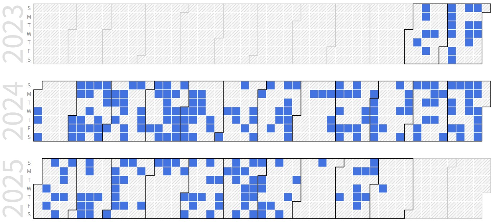

Youngwon Jeon (Undergraduate Student)
Undergraduate Student (B.S), Embedded System-on-Chip Integrator |
Repository Commit History
|  |
Introduction
Full Bio Sketch
Mr. Jeon is currently doing his undergraduate degree in Electronics Engineering at Kyungpook National University, Daegu, Republic of Korea. His research interests pathfinding algorithm derived from A* search algorithm. He designed Obstacle-Aware Adaptive A* Algorithm for search time reduction. He is pursuing his research to apply this algorithm to autonomous vehicle with multi-object situation.
Research Topic
Obstacle-Aware Adaptive A-Star Algorithm for Search Time Reduction (ASTAR)
 Obstacle-Aware Adaptive A* prefers nodes near walls than ordinary A*.
Comparison of search time, navigate trials, total cost of result in Ordinary A* and Obstacle-Aware Adaptive A* on random map. Apply on multiple autonomous vehicle with multi-object situation.
Obstacle-Aware Adaptive A* prefers nodes near walls than ordinary A*.
Comparison of search time, navigate trials, total cost of result in Ordinary A* and Obstacle-Aware Adaptive A* on random map. Apply on multiple autonomous vehicle with multi-object situation.
Publications
Conference Publications (Intl. 1)
Youngwon Jeon and Daejin Park. Self-Organizing Movement Control for Large-Scaled Autonomous Vehicle Collision Congestion Mitigation (On Writing) In IEEE Vehicular Networking Conference (VNC), 2024.
Participation in International Conference
IEEE VNC, Kobe, Korea
Last Updated, 2024.3.09